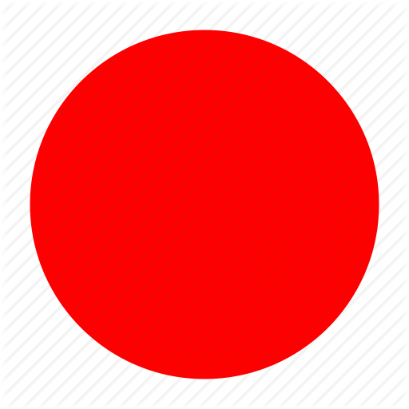
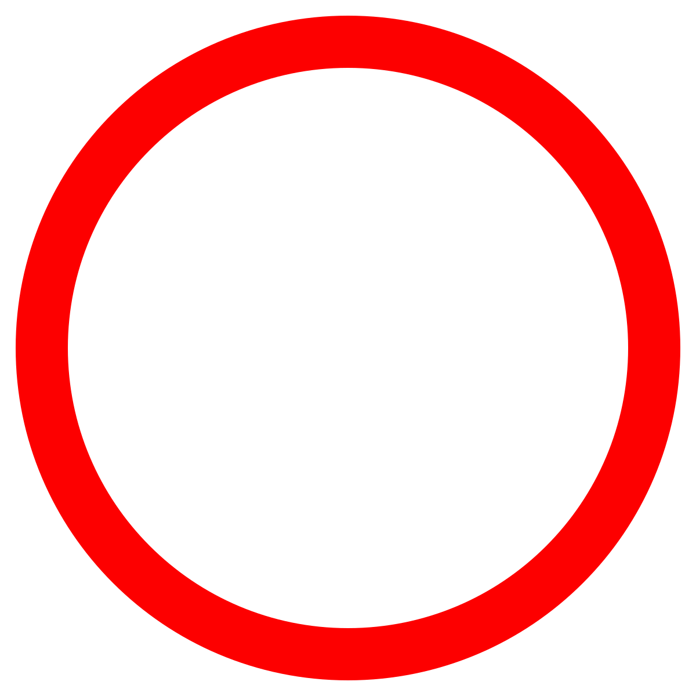

Le Tipologie
Esistono diverse forme di kumite, ciascuna con obiettivi e livelli di complessità differenti. Il kihon kumite è il combattimento preordinato con movimenti prestabiliti, utile per principianti. Il jiyu kumite, o combattimento libero, permette invece maggiore libertà e spontaneità, mettendo alla prova la capacità di applicare tecniche in situazioni dinamiche e imprevedibili.
Miglioramento Fisico e Mentale
Il combattimento nel kumite è un allenamento intenso che migliora la condizione fisica generale, compresa la resistenza, la forza e la velocità. Inoltre, richiede un alto livello di concentrazione e di controllo emotivo. I praticanti devono mantenere la calma e la lucidità sotto pressione, affinando la loro disciplina mentale e la capacità di prendere decisioni rapide.
Le Strategie e le Tattiche
Il kumite non è solo una questione di forza fisica, ma anche di strategia e tattica. I praticanti imparano a leggere l'avversario, anticiparne i movimenti e sfruttare le opportunità. Questo include l'uso di feints (finte), angolazioni, timing (tempismo) e distanziamento per controllare il combattimento e superare l'opponente.
La Sicurezza e lo Spirito Sportivo
La sicurezza è un aspetto fondamentale del kumite. Durante l'allenamento, i praticanti imparano a controllare le loro tecniche per evitare lesioni. Inoltre, il kumite promuove valori di rispetto e spirito sportivo. Il confronto con un avversario deve essere condotto con integrità e rispetto reciproco, riflettendo i principi etici del karate.
Le tecniche utilizzate
Il kumite da gara, o combattimento sportivo, è una disciplina del karate in cui i praticanti competono seguendo regole specifiche per dimostrare abilità tecniche, tattiche e sportive. Le tecniche utilizzate devono essere eseguite con velocità, precisione e controllo per ottenere punti senza causare lesioni all'avversario. In questa forma di kumite, i punti vengono assegnati in base alla qualità e all'efficacia delle tecniche eseguite. I punti per ogni tecnica vengono segnati con questo simbolo , invece i "non punti" con questo .
Kizami-tsuki
CORPO
TESTA
Il kizami-tsuki è un pugno diretto eseguito con il braccio anteriore. Questa tecnica è veloce e viene utilizzata principalmente per colpire il viso o il torso dell'avversario. Il pugno deve essere scattante e preciso, sfruttando la velocità e la sorpresa per guadagnare punti. È spesso usato come tecnica di apertura o per interrompere l'attacco dell'avversario.
Gyaku-tsuki
CORPO
TESTA
Il gyaku-tsuki è un pugno diretto eseguito con il braccio posteriore. Questa tecnica combina potenza e precisione, sfruttando la rotazione del corpo per generare forza. Il gyaku-tsuki è efficace sia come attacco diretto sia come risposta a un attacco dell'avversario, mirato al torso o al viso.
Mae-geri
CORPO
TESTA
Il mae-geri è un calcio diretto in avanti, eseguito con la gamba anteriore o posteriore. Questa tecnica mira a colpire il torso o l'addome dell'avversario. Il mae-geri è uno dei calci fondamentali nel kumite, utilizzato per la sua rapidità e semplicità. La potenza deriva dall'estensione diretta della gamba e dalla spinta dell'anca. Il mae-geri, però, non è molto usato nelle competizioni perché è molto facile compiere fallo e non fare punto.
Yoko-geri
CORPO
TESTA
Il yoko-geri è un calcio laterale che può essere eseguito con la gamba anteriore o posteriore. Questa tecnica mira a colpire il fianco o il torso dell'avversario. Il yoko-geri è potente e diretto, sfruttando la spinta dell'anca e la forza della gamba per generare un impatto significativo.
Mawashi-geri
CORPO
TESTA
Il mawashi-geri è un calcio circolare che può essere eseguito con la gamba anteriore o posteriore. Questo calcio mira a colpire il fianco, il torso o la testa dell'avversario. La tecnica richiede flessibilità e precisione, poiché il calcio deve essere eseguito con la giusta angolazione e velocità per essere efficace e guadagnare punti.
Ura-mawashi-geri
CORPO
TESTA
L'ura-mawashi-geri è una variante del mawashi-geri, eseguito con un movimento circolare inverso. Questo calcio dev'essere diretto alla testa dell'avversario e può essere difficile da prevedere. L'ura-mawashi-geri richiede un'elevata coordinazione e controllo, poiché il piede deve colpire con precisione mentre il corpo ruota in senso contrario rispetto al mawashi-geri tradizionale.
Ashi-barai
CORPO
TESTA
L'ashi-barai è una tecnica di spazzata utilizzata per destabilizzare e far cadere l'avversario. Questa tecnica si esegue colpendo la caviglia o il piede dell'avversario con un movimento rapido e basso della gamba. L'ashi-barai è spesso combinata con altre tecniche di pugno o calcio per creare aperture e ottenere un vantaggio strategico durante il combattimento. Il "vero" punteggio di questa tecnica viene attribuito solo quando l'avversario cade a terra e viene colpito con uno tsuki (pugno) entro 5 secondi.